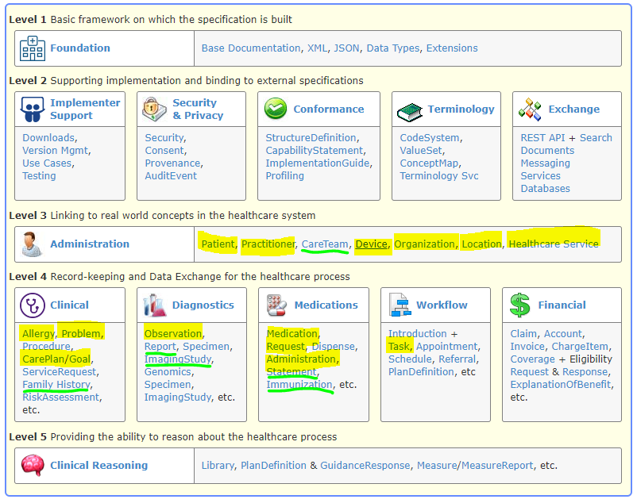
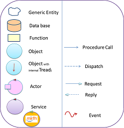
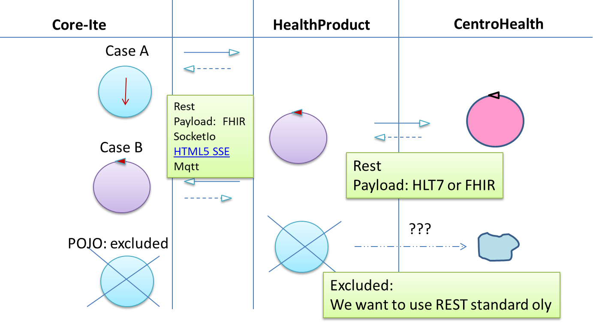
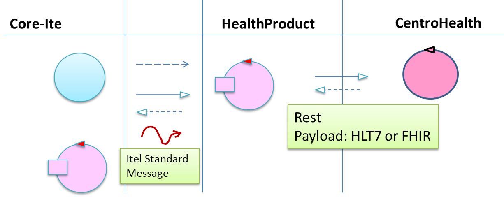

Introduction
Overview
Sm@rtEven ha due tipi di UML-actors:
- Operatore
Un agente specializzato (ad es. un medico) che accede mediante
un browser ad una (unica?) piattaforma ITel installata presso un centro (ad es. ospedale).
- Paziente
Un agente non specializzato (una persona) che accede ai servizi erogati da una piattaforma ITel mediante computer e/o smartphone.
Terminologia:
- Area Geografica: una zona del mondo (con un proprio TimeZone )
- Core-Itel: nucleo sempre presente in ogni installazione ITel: si veda
ITel: Modellazione del CORE
- CentroBase: la struttura, entro una precisa Area Geografica,
in cui è installato il Core Itel e un insieme di ProdottoDiContesto
- ProdottoDiContesto (ex adapter): un 'modulo' installabile nel CentroBase
(o forse anche remoto ???) che fornisce servizi specializzati in un certo dominio applicativo (ad es. HealtCare)
- Paziente: una persona modellata usando (un sottoinsieme ??? di)
FHIR Patient, che vive in una determiata Area Geografica
ed e' associato ad un (o più ???) CentroHealth
- CentroHealth: una struttura specializzata, entro una precisa Area Geografica,
che si occupa dei dati e dello stato di salute del Paziente
- Enrollment: iscrizione nel CentroBase di un paziente già associato
a un (o più ???) CentroHealth
- Operatore: un agente (Medico, Infermiere, Admin) che utilizza il CentroBase
associato a un (o sottoinsiente ???) di Paziente-enrolled
- HealthDevice: un dispositivo capace di effettuare misure (glicemia, pressione, etc) su un paziente
- ValoreMisurato: un dato ricavato dall'usp di un HealthDevice
- Piano terapeutico: un Care Plan (sottoinsieme ??? di)
FHIR careplan relativo a un preciso
Paziente
User stories: operatore
Come
Operatore
- poter introdurre/eliminare Enrollment di un paziente
- poter inviare/ricevere dati a/da uno o più CentroHealth associati al paziente
- ricevere notifiche su modifiche del Piano terapeutico del Paziente da parte di un CentroHealth
- inviare notifiche su modifiche del Piano terapeutico al Paziente
- monitorare un ValoreMisurato effettuato dal Paziente e/o il suo storico
e operare di conseguenza, anche inviando notifiche
User stories: paziente
Come
paziente:
- ricevere supporto alla realizzazione di un Piano terapeutico
- ricevere notifiche su modifche del Piano terapeutico
- avere supporto per ottenere (via Bluetooth)
un ValoreMisurato e inviarlo al CentroBase
- effettuare un teleconsulto
User stories: Sm@rtEven
Si veda:
Telemedicina ( Amministratore - Operatore )
Amministratore:
- Gestione Utenti
- Gestione Pazienti
- Gestione Profili
- Schemi terapeutici (azioni/misurzioni programmate)
- Monitoraggio (allarmi, diario)
- Gestione anagrafiche
- Gestione questionari
- Notifiche
- Creazione report
- Strumenti
Operatore: tutto tranne creare utenti
Teleconsulto
|
Altri moduli (out if DISI scope)
- Sm@rtC6
- Sm@rtWelcome
- Sm@rtReady
- Sm@rtContact
- Sm@rtRecall
- Sm@rtScreeing
- Sm@rtSensor
- Sm@rtConnect
- Sm@rtTest
- Sm@rtADI
|
Requirements: ProdottoDiContesto HEALTH
La modularizzazione di Nestagora ha portato alla opportunità di incapsulare entro il
ProdottoDiContesto
denominato
Health Data Adapter il problema della interazione con l'insieme di
N>=1
CentroHealth cui è associato un paziente.
L'assunzione è che le informazioni scambiate da ITel con un
CentroHealth siano codificate in modo standard tramite:
Le informazioni scambiate da ITel con
Health Data Adapter sono codificate usando un sottoinsieme di
FHIR.
Qui sotto
(si veda
ITel-scope)
sono evidenziati in giallo i concetti centrali e sottolineati in verde concetti secondari ma comunque di interesse ITel.

Per i dettagli sui
Domini di riferimento si veda:
FHIR - Itel Scope
Requirement analysis
- Le richieste provenienti da Itel verso
Health Data Adapter dovrebbero contenere indicazioni sul CentroHealth implicato nella richiesta o
contenere informazioni da cui dedurre quale CentroHealth consultare.
- ...
Problem analysis
Come premessa e' opportuno consultare la discussione sui
Modelli di interazione presentata in:
Health - Interazione.
Prime osservazioni pssono essere:
- Sostituire un oggetto con un attore non implica ancora l'insorgere di grosse problematiche relative ai sistemi distribuiti.
Tutto può avveire ancora su base locale con interazioni scambio di messaggi tra oggetti attivi, ciascuno dotato
di una input queue. In questo modo si evitano a priori problemi legati all'suo di di memoria comune.
- Attualmente il DISI utilizza attori basati su Kotlin che implicano meno librerie e sembrano anche più performanti rispetto ad attori
Akka. Si noti che Kotlin sta diventando il linguaggio di riferimento per applicazini su Android.
-
Si ricorda che si possono attivare migliaia di attori poichè gli attori sono gestiti con schemi 'a coroutine'.
Logical architecture
Si ricorda la legenda:

Oggetti + REST calls

Problemi FONDAMENTALI DA DISCUTERE
- Cosa intendiamo esattamente per interazione REST?
- Come viene introdotto il concetto di risorsa implicato dalla interazione REST
- Una chiamata REST sincrona pone grossi problemi, ben noti. In cosa consiste una chiamata REST asincrona?
- In che modo e' organizzato un server REST quando deve gestire una chiamata asincrona?
- Le API Cloud Healthcare che sembrano
usare le gRPC
(si veda anche
Google Cloud Endpoints for gRPC) possono rappresentare uno standard accettabile per la interoperabilita'
tra diversi CentriHealth?
- In che modo un server REST notifica informazioni ai client(browser)?:
Attori + REST calls

Test plans
Project
Riferimenti al 24/07
Testing
Deployment
Maintenance